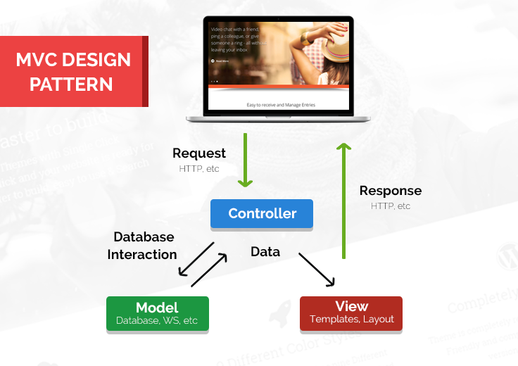

Extraia toda a pasta do projeto para o diretório do apache:
No Linux normalmente é /var/www/
No Windows tem que ser o diretório htdocs, tanto no xampp, wampp ou apache (depende de qual você estiver usando): Ex: c:/xampp/htdocs/
Para utilizar tanto o CodeIgniter como esse framework básico é necessário realizar algumas configurações do mod_rewrite:
Na pasta principal do framework existe o arquivo
RewriteEngine On
RewriteCond %{REQUEST_FILENAME} !-f
RewriteCond %{REQUEST_FILENAME} !-d
RewriteRule ^(.*)$ /mini /index.php/$1 [L]
Altere o trecho 'mini' para o nome real da pasta onde está seu projeto.
Altere esse arquivo para permitir o mod_rewrite no diretório do seu projeto:
sudo nano /etc/apache2/sites-available/000-default.conf
Dentro desse arquivo adicione, de acordo com o nome da pasta do seu projeto:
<VirtualHost *:80>
# The ServerName directive sets the request scheme, hostname and port that
# the server uses to identify itself. This is used when creating
# redirection URLs. In the context of virtual hosts, the ServerName
# specifies what hostname must appear in the request's Host: header to
# match this virtual host. For the default virtual host (this file) this
# value is not decisive as it is used as a last resort host regardless.
# However, you must set it for any further virtual host explicitly.
#ServerName www.example.com
ServerAdmin webmaster@localhost
<Directory "/var/www/html/mini">
AllowOverride All
</Directory>
Execute os seguintes comandos:
sudo a2enmod rewrite sudo service apache2 restart
No WINDOWS Encontre o arquivo C:\xampp\apache\conf\http.conf
Encontre a linha abaixo e remova o "#":
# LoadModule rewrite_module modules/mod_rewrite.so
Encontre o trecho que possui as tags de diretório e modifique para:
#troque esse
<Directory />
Options FollowSymLinks
AllowOverride None
Order deny,allow
Deny from all
</Directory>
#por esse
<Directory />
Options All
AllowOverride All
</Directory>
Ainda nesse arquivo encontre todos os locais que possui
Reinicie o xampp
A parte mais complicada do MVC é entender o fluxo das requisições, sempre que o usuário pedir algo será ao controle, que irá verificar com o banco e enviar para a view responsável por exibir o que o usuário quer.
O usuário sempre pedirá ao controle, por esse movtivo o controller é o primeiro item da URL, o método daquele controle é o segundo, e se necessário pode haver mais partes na url que serão parâmetros para o método.
Crie um schema no banco de dados
CREATE SCHEMA `crudteste` ;
Configure o arquivo sys/config.php
#primeiro controller a ser chamado por padrao $index = "Principal"; $host = "localhost"; $dbname = "crudteste"; $user = "root"; $pass = "";#no xampp a senha padrao e vazia #nao realizar mais modificacoes no banco $freezeDb = false;
Acesse via navegador: http://localhost/
Você irá para a página inicial, mas poderá acessar o exemplo do CRUD
Salve alguma informação e veja que as tabelas foram criadas automaticamente no banco de dados.
Abra o código dos arquivos e leia os comentários para entender o fucnionamento, inicie com:
Você poderá usar a função
#Dentro de views ela sempre irá existir print serverUrl();
Para realizar operações no banco de dados use a biblioteca Redbean que já está incluida nesse framework.
Para acessar a documentação oficial:
http://redbeanphp.com/Para esse framework foi criado um mod para o RedBean que renomeia alguns poucos comandos:
#Original
R::dispense("tabela");
#Mod
Rb::tbl("tabela");
#Original
R::store($obj);
#Mod
Rb::save($obj);
#Original
$obj = R::load($tblName,$id);
R::trash($obj); # -> delete
#Mod
Rb::delete($tblName,$id);
#Porem qualquer comando antigo ainda pode ser utilizado:
Rb::dispense("tabela")
Rb::findAll("tabela");
Dentro do controller você irá criar um array que será passado para a view, porém quando ele é passado, cada casa do array é convertida para uma variável.
#controller
$data['dados'] = array("nome"=>"João");
view("listar",$data);
#view
#Na view cada casa do array é convertida em variável:
print $dados["nome"];
#------------------------------------
#controller
$data['nomeDaPagina'] = "Principal";
view("listar",$data);
#view
#Na view cada casa do array é convertida em variável:
print $nomeDaPagina;
Bom projeto!